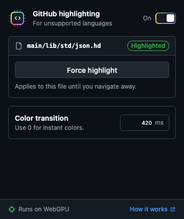

Universal GitHub Highlighting
JUST THE CONTROLS YOU NEED
A little control.
A lot of color.
Turn highlighting on or off.
Force a file. Fine-tune the color fade.
Runs locally. Your code stays on your device.

Turn highlighting on or off.
Force a file. Fine-tune the color fade.
